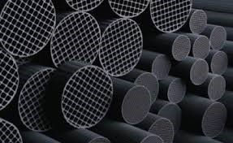

Ingevity Corporation is advancing the use of adsorbed natural gas (ANG) as an economical and scalable alternative fuel source that reduces greenhouse gas emissions. ANG is an enhanced version of compressed natural gas (CNG) that uses activated carbon to allow the natural gas to be stored at much lower pressures than CNG, which enables ANG to be a practical solution in a variety of applications. For example, ANG provides a cost-effective solution for powering light-duty vehicles. Ingevity is exploring solutions and collaborating with industry to achieve social, economic, and environmental sustainability by developing products and processes to identify and solve greenhouse gas emission issues across the globe.
Ingevity anticipates that ANG technology will significantly increase the capacity to store natural gas and reduce methane emissions. Ingevity is partnering with a range of organizations to examine the effectiveness of their methane mitigation technology including:
| Treatment of Gas | Emissions (CO2e) | Footprint |
|---|---|---|
| ANG | 3 kg | 0.1% |
| CNG | 44 kg | 0.7% |
| Flaring | 1,504 kg | 22.9% |
| Venting | 6,574 kg | 100% |